Published: 2023-04-24
Original link: https://www.cnphotos.net/academy/show-133.html
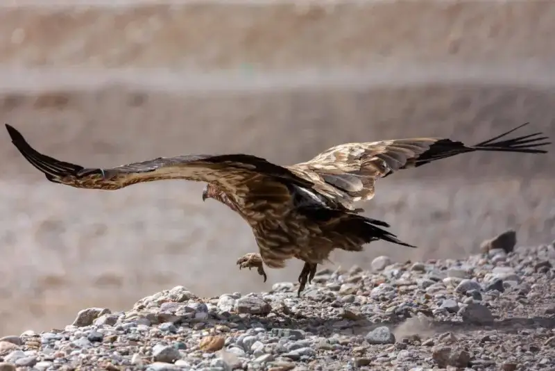
I am a wildlife photographer. I have shot wildlife for more than ten years. I have always used Canon cameras with lenses of many brands and focal lengths. I recently tried the Sigma 60-600mm F5-6.3 DG OS HSM | Sports lens. What drew me most is its 10x zoom. Its focal range covers medium telephoto, telephoto, and super telephoto. For a wildlife photographer, it is clearly a convenient choice.
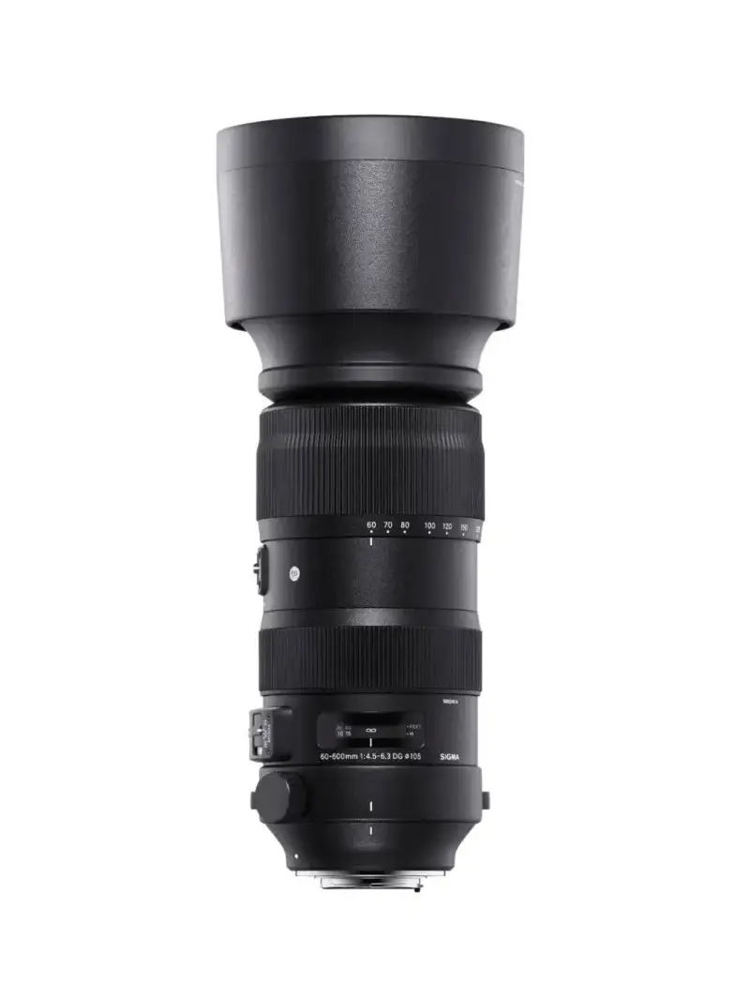
The Sigma 60-600mm F5-6.3 DG OS HSM | Sports uses a 25-element, 19-group design. It is an externally zooming lens. It weighs 2,700 g. Its size is ø120.4 mm x 268.9 mm, and its filter thread is 105 mm.
The Sigma 60-600mm has several function switches. It has an AF/MF switch, a focus limit switch, an optical stabilizer mode switch, and a user-defined switch. On the other side of the lens is a zoom lock switch. The zoom lock stops the barrel from sliding out on its own.
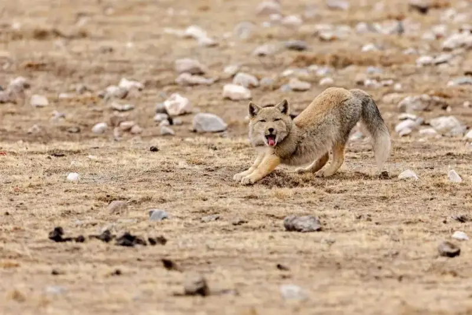
The Sigma 60-600mm meets the need to shoot wildlife in its environment. At the 600 mm super-telephoto end, it also captures striking wildlife behavior. One lens covers every view in the 60-600 mm range. The center sharpness at 600 mm is very good. It is a top choice for photographers who love to shoot wildlife.
In good light, this lens locks onto the subject quickly. Continuous tracking is also decent. In low light, its focus speed drops a little. The sample images also show a very nice background blur.
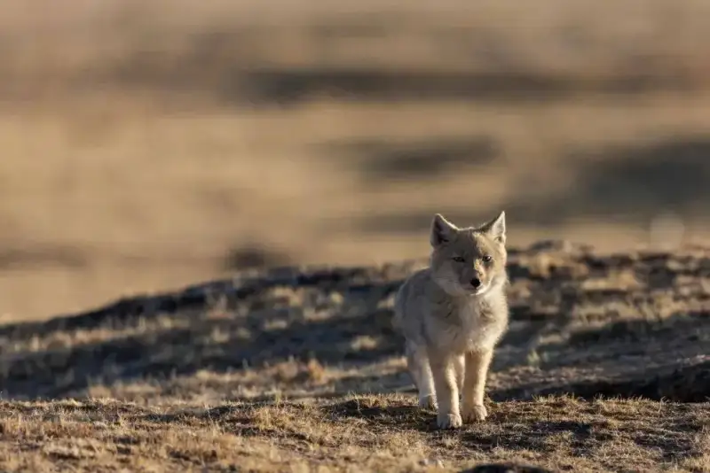
Worth noting, 60-600 mm is a range that only Sigma offers. The price of both the DSLR and mirrorless versions is very attractive for photographers.
Overall, I think the Sigma 60-600mm F5-6.3 DG OS HSM | Sports handles wildlife shooting with ease. When we shoot wildlife on the plateau, and you need a large-zoom lens that reacts quickly and still gives the best possible image quality, I suggest you consider this one.
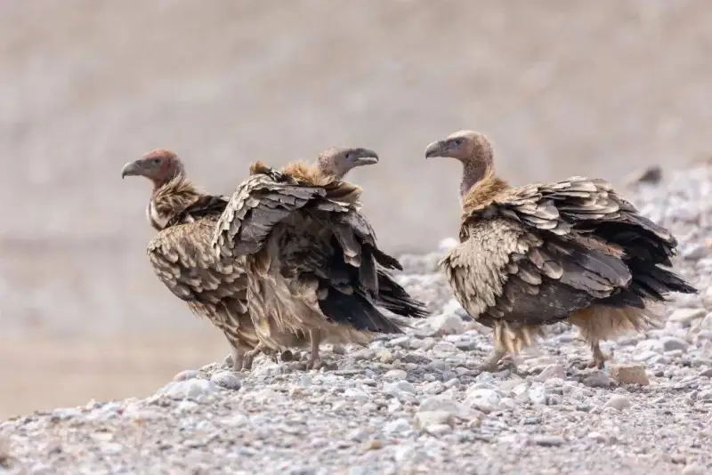
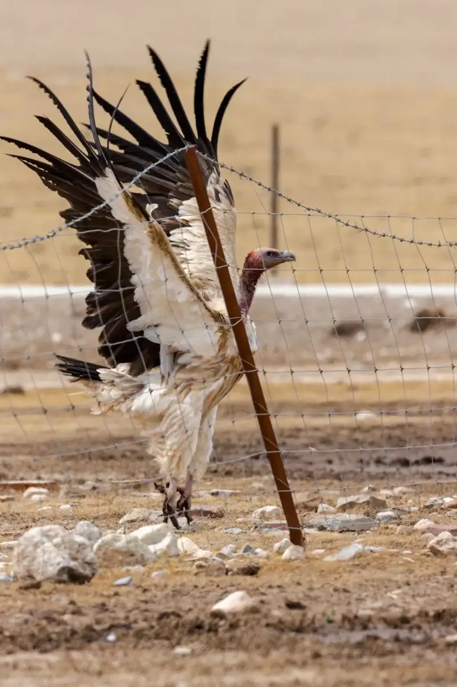
To be honest, this lens is fairly heavy. That is a problem I often face when I carry gear into the field. Hand-holding it is tiring, so I must mount it on a tripod for a fixed position. The lens collar is removable. You can swap it for another collar or attach the lens to a monopod, depending on the use. Sigma also added two strap lugs. On long trips, you can clip the camera strap to these lugs. This reduces the load that the lens puts on the camera mount.
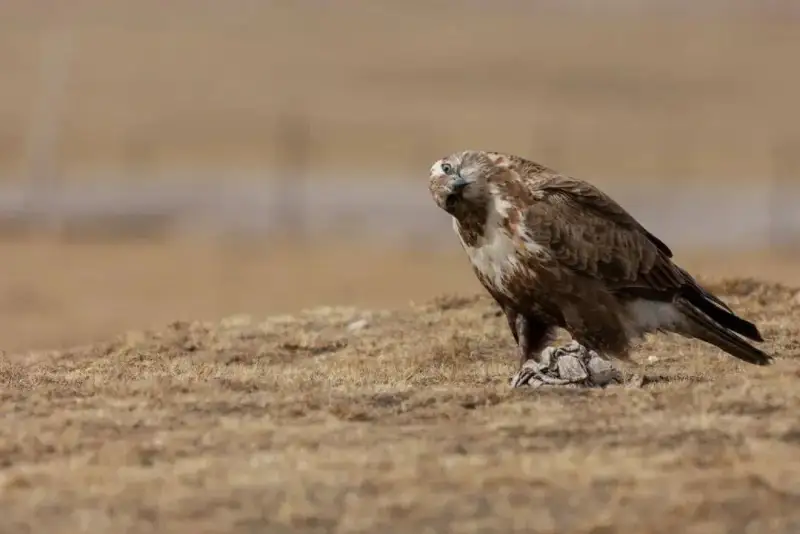
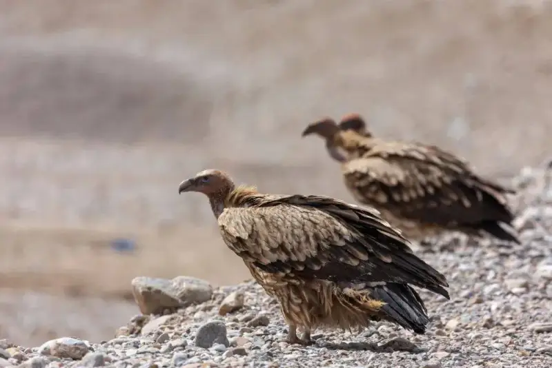
In addition, the mirrorless version, the Sigma 60-600mm F4.5-6.3 DG DN OS | Sports, came out this February. It is lighter than this DSLR version by about 200 g. It also uses a new focus motor. Sigma says this motor gives fast, accurate, and quiet autofocus. Its close-focus distance is 0.45 to 2.6 m. At 200 mm, the magnification peaks at 1:2.4. The lens offers two stabilizer modes. OS1 suits normal shooting, and OS2 suits tracking. At the wide end it gives up to 7 stops of stabilization, and at the telephoto end up to 6 stops.
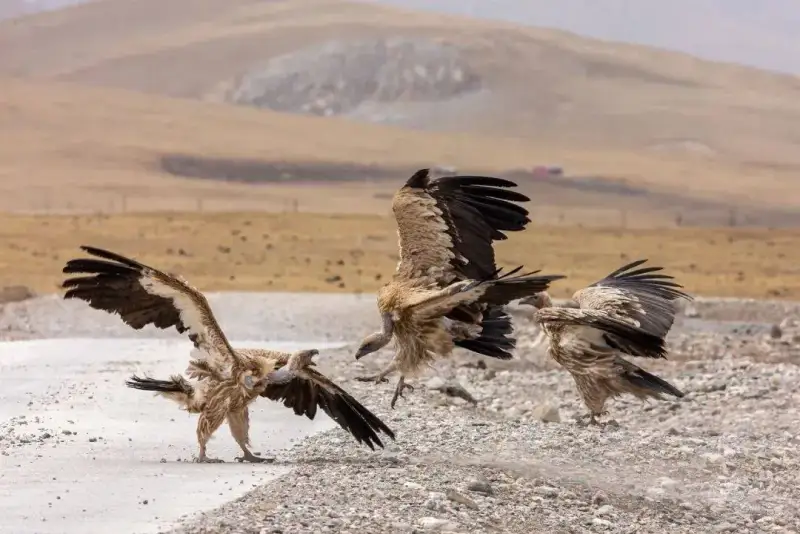
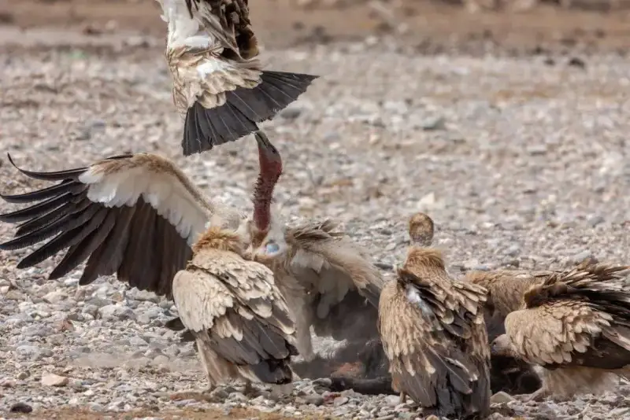
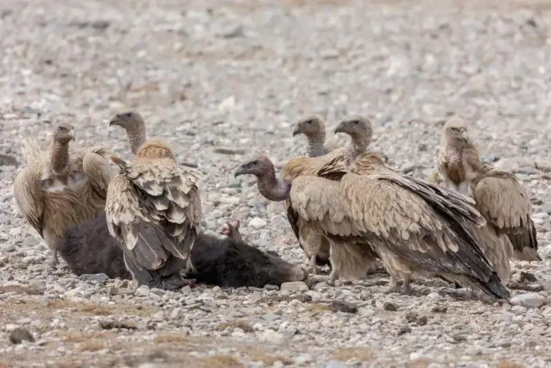
About the author
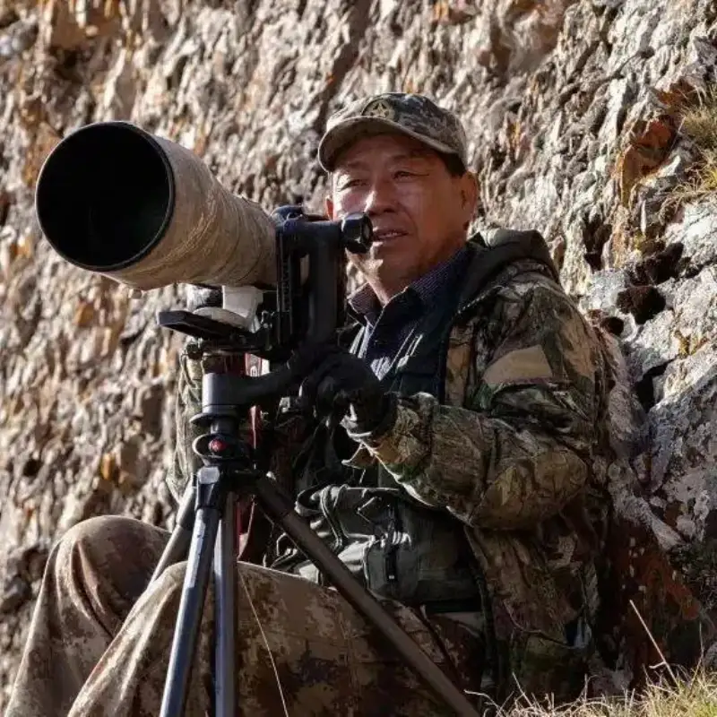
Bao Yongqing
Well-known nature photographer
Winner of the 13th China Photo Gold Award
Vice chairman of the Qinghai Photographers Association